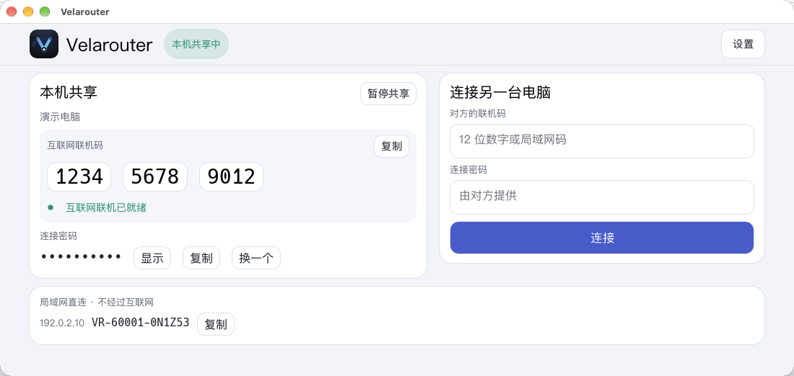
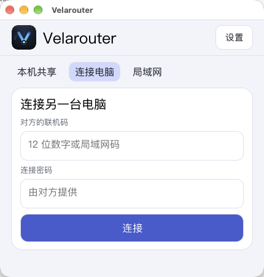

Velarouter
输入联机码，连接远程桌面
两台电脑装同一个客户端，用联机码和密码连接。局域网不需要服务器，也不需要注册账号。
客户端截图

查看窄窗口截图

选择你的系统
macOS
Apple Silicon · DMG。拖入「应用程序」。安装包未公证。
Windows
x64 · ZIP。解压后运行
Velarouter.exe，无需安装。Linux
x86_64 / ARM64。Ubuntu / Debian 优先安装 DEB；使用 TAR.GZ 时，解包后运行
./install.sh。安装后从应用菜单启动。
选用哪种客户端
桌面
键鼠、剪贴板、多屏与文件传输。0.1.4 加入最近连接、可选可信设备及最多四路的只读桌面墙。
手机浏览器
在同一可信局域网打开被控端给出的 Web 地址，使用单指操作。这里是项目主页，不是远控入口。
终端
0.1.4 安装包附带
velarouter-view。适合只读预览，不会发送键鼠或保存画面。
标准安装包使用 JPEG。H.264 和 Linux 系统声音仅供源码构建试验。查看 0.1.4 版本说明。
怎么连接
- 在被控电脑打开 Velarouter，将联机码和密码发给你信任的人。
- 在主控电脑输入这两项。同一局域网优先使用
VR-…码。 - 结束访问时，在被控电脑点击「停止共享」或「暂停共享」。
部分网络无法跨网直连，默认不会自动中继。查看权限设置和排障指南。